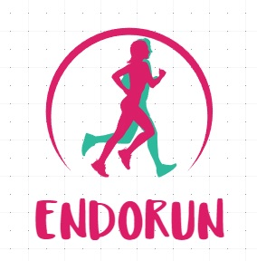

Présentation de l'association
EndoRun est une association qui regroupe toute les courses ou des personnes veulent courir avec un dossart personnalisé pour mettre en lumière l'endométriose.
EndoRun est une association qui regroupe toute les courses ou des personnes veulent courir avec un dossart personnalisé pour mettre en lumière l'endométriose.
Dès aujourd’hui et jusqu’au dernier jour de l’ENDOrun, relevez les défis et les Challenges que nous vous proposerons.
Pour cela, suivez nous sur les réseaux sociaux (liens dans la barre de menu) ou dans cette rubrique.
Plus d’infos dans les semaines à venir …
DÉFI N°2… nous aider à remplir la cagnotte qui sera reversée à la recherche (l’association étant reconnue d’intérêt générale, votre don est déductible selon les règles en vigueur)